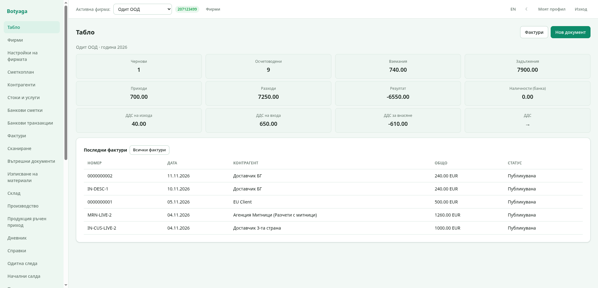

Документация
Указания за работа с Botyaga по модули.
Botyaga е уеб счетоводна система за български фирми: фактури, дневник, ДДС (дневници по чл. 116, VIES, справка-декларация), SAF-T, банка, склад, производство, комплектоване и OSS. Работи като един интерфейс на адрес :3021 и използва API зад него.
- Един вход за всички фирми — превключвате с падащото „Активна фирма“.
- Мултитенантност: всяка фирма има свой сметкоплан, контрагенти, фактури, склад и права.
- ДДС и SAF-T по официалните спецификации на НАП; експорт PDF/Excel/Word/ODT.
- Локално доказателство: backend (Elixir/Phoenix) + frontend (Next.js) + PostgreSQL.
Фирми и настройки
Фирми, настройки на фирмата, роли и печат
Сметкоплан и периоди
Сметкоплан, начални салда, счетоводни периоди
Контрагенти и стоки
Контрагенти, стоки и услуги, цени и ДДС
Банка
Банкови сметки, извлечения и осчетоводяване
Фактури
Входящи и изходящи фактури, дебитни/кредитни известия
Дневник и одит
Счетоводен дневник, ръчни записи, одитна следа
ДДС
ДДС операции, дневници и справка-декларация, VIES
SAF-T
Експорт на SAF-T XML и кореспонденции
Производство и комплектоване
Рецепти, поръчки, месечни карти, комплектоване
Склад и материали
Складова справка, изписване на материали, вътрешни документи
OSS режим в Съюза
OSS отчети, месечно деклариране и тримесечна справка
Справки
Оборотни, главна книга, по сметка и по контрагент, баланс, ОПР
Потребители и администриране
Потребители, фирми, права, лог за влизанията
Първи стъпки
- Създайте фирма и попълнете данните ѝ (Настройки на фирмата).
- Заредете сметкоплана и началните салда.
- Добавете контрагенти и стоки.
- Издайте първата фактура — тя сама се осчетоводява в дневника.
